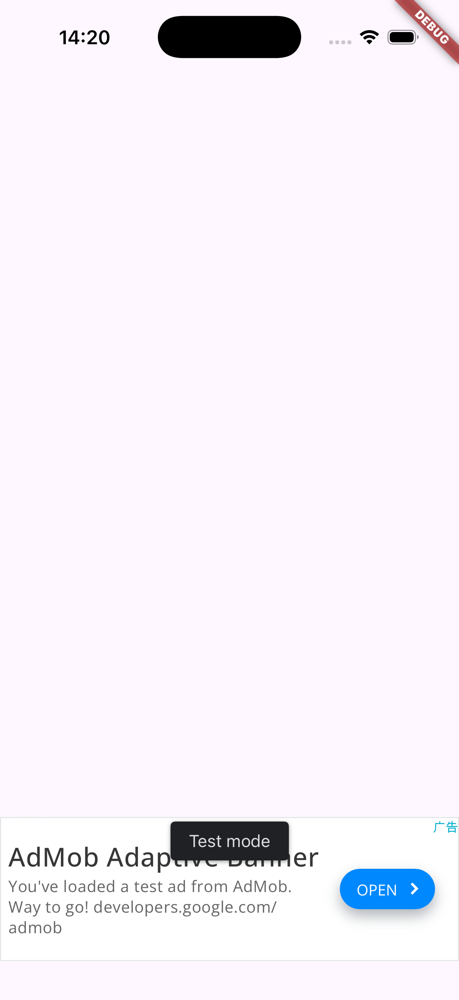
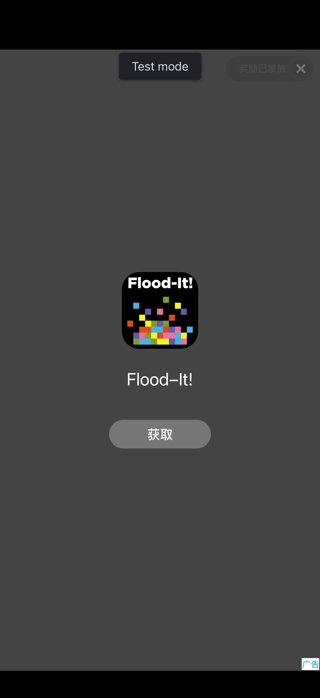
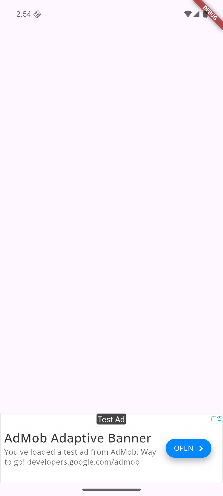

Give your agent an ad expert.给 Agent 一个广告专家。
Your agent already built the app. When the ads have to make money, give it this instead of letting it guess. Install it first. The steps are below. Agent 已经把应用写好了。广告要赚钱时，把这个交给它，别让它自己猜。先装上，步骤在下面。
Install安装
Node.js 20 or newer runs the MCP server and the CLI. Clone the repository, install and build: 运行 MCP 服务器和 CLI 需要 Node.js 20 或更新版本。克隆仓库后安装并构建：
npm install
npm run build # outputs packages/mcp-server/distTo try it in Claude Code for one session, without touching global config: 在 Claude Code 里只为当前会话试用，不改全局配置：
claude --plugin-dir /path/to/ai-ad-monetizationFor a generic MCP client, point it at the built server entry: 其他 MCP 客户端把配置指向构建产物即可：
{
"mcpServers": {
"ad-monetization": {
"command": "node",
"args": ["/path/to/ai-ad-monetization/packages/mcp-server/dist/index.js"]
}
}
}To build the app you need Flutter 3.38.1 or newer, Xcode for iOS, and JDK 17 with Android SDK 36 for Android. If a tool is missing, that build step is skipped and named, never counted as passed. 构建应用需要 Flutter 3.38.1 或更新版本，iOS 需要 Xcode，Android 需要 JDK 17 和 Android SDK 36。缺哪个工具，对应的构建步骤就显示 skipped 并写明原因，不会算成通过。
Ask an agent交给 Agent
Say what you want in your own words, for example: 用你自己的话说出需求即可，例如：
Add a banner, an interstitial and a rewarded ad to this Flutter app.
Show me the plan before you write.The skill then walks the sequence analyze, recommend, plan, confirm, apply, validate, verify. Each step shows its result before the next one runs. Skill 会按 analyze、recommend、plan、confirm、apply、validate、verify 的顺序推进，每一步都会先给你看结果。
The write step is two-phase. First a plan with diffs and a plan hash; nothing touches disk. Applying needs confirm: true and the expectedPlanHash from the plan, so a changed project is refused instead of half-written.
写入分两步。第一步只返回计划和 diff 以及计划哈希，不写盘；执行 apply 必须带 confirm: true 和计划返回的 expectedPlanHash，工程一旦被改动就会拒绝，避免写一半。
The tools工具
Fourteen tools. Only generate_ad_integration writes the project. verify_ad_integration runs commands and does not edit source.
共 14 个工具。只有 generate_ad_integration 会写入工程；verify_ad_integration 会执行命令，但不修改源码。
| Name名称 | Does性质 |
|---|---|
| search_ad_platforms | reads只读 |
| compare_ad_platforms | reads只读 |
| recommend_ad_platform | reads只读 |
| get_platform_docs | reads只读 |
| get_sdk_compatibility | reads只读 |
| analyze_project | reads只读 |
| get_integration_guide | reads只读 |
| plan_ad_placements | reads只读 |
| validate_ad_config | reads只读 |
| build_integration_report | reads只读 |
| get_ad_revenue | reads只读 |
| analyze_ad_performance | reads只读 |
| verify_ad_integration | runs commands执行命令 |
| generate_ad_integration | writes写入 |
What gets written写了什么
Generated code lives under lib/ads, plus one test that plays a test ad on a device. Your own code is not rewritten: 生成的代码放在 lib/ads 下，另外还有一个在设备上试播测试广告的测试。你自己的代码不会被改写：
| File文件 | Role作用 |
|---|---|
| ads.dart | unified export统一导出 |
| ad_unit_ids.dart | ad unit IDs, Google test IDs by default广告单元 ID，默认是 Google 官方测试 ID |
| ads_consent.dart | UMP consent flow wrapperUMP 同意流程封装 |
| ads_initializer.dart | consent first, initializes only when canRequestAds() is true先走同意流程，canRequestAds() 为 true 才初始化 |
| anchored_banner_ad.dart | adaptive anchored banner widget自适应锚定横幅 Widget |
| interstitial_ad_controller.dart | preload, frequency cap, reload after close预加载、频控、关闭后重新加载 |
| rewarded_ad_controller.dart | preload, isReady state, reward callback预加载、isReady 状态、奖励回调 |
| integration_test/ads_smoke_test.dart | plays a test ad on a device在设备上试播测试广告 |
The interstitial and rewarded controllers expose lastLoadError with the most recent load failure. A settings entry can call showPrivacyOptionsAndRetry() so an EEA user can change consent later. Real IDs are injected at build time, e.g. --dart-define=ADMOB_ANDROID_BANNER_ID=ca-app-pub-xxxx/yyyy, without editing source.
插屏和激励控制器提供 lastLoadError，可以读到最近一次加载失败。设置页可以调用 showPrivacyOptionsAndRetry()，让 EEA 用户之后随时修改同意状态。真实 ID 在构建时注入，例如 --dart-define=ADMOB_ANDROID_BANNER_ID=ca-app-pub-xxxx/yyyy，不需要改源码。
Verify验证
Three levels, reported separately: static config checks, platform builds, and test ads actually loading on a device you name. A missing toolchain makes that step skipped, and skipped is never passed. 三级分开报告：静态配置检查、平台构建、以及在你指定的设备上真实加载测试广告。缺工具链的步骤是 skipped，而跳过永远不算通过。
node packages/mcp-server/dist/cli.js verify <project> \
--levels static,build,runtime --devices <id> --show-fullscreenExit codes: 0 means no requested level failed, 1 means a level failed, 3 means every requested level was skipped. 退出码：0 表示请求的级别没有失败；1 表示有级别失败；3 表示所有请求的级别都被跳过。
- pub getpassed通过
- analyzepassed通过
- Android debugAndroid 调试构建passed通过
- iOS simulatoriOS 模拟器passed通过
The runtime level loads real Google test ads on the devices you name. These are the tool's own captures from that level: 运行时这一级会在你指定的设备上真实加载 Google 测试广告。下面是这一级跑出来的截图：



When it fails出错的时候
The failures seen most often, and what they mean: 最常见的问题和它们的含义：
| Symptom现象 | Cause and fix原因与处理 |
|---|---|
| Android crashes at launch: “The Google Mobile Ads SDK was initialized incorrectly”Android 启动崩溃：“The Google Mobile Ads SDK was initialized incorrectly” | AndroidManifest.xml is missing the App ID. Run validate_ad_config and fix the ANDROID_APP_ID rule.AndroidManifest.xml 缺少 App ID。重新跑 validate_ad_config，按 ANDROID_APP_ID 规则修复。 |
| iOS crashes at launch: GADInvalidInitializationExceptioniOS 启动崩溃：GADInvalidInitializationException | Info.plist is missing GADApplicationIdentifier. Same check, IOS_APP_ID rule.Info.plist 缺少 GADApplicationIdentifier。同一个检查，看 IOS_APP_ID 规则。 |
| uses-sdk:minSdkVersion, manifest merger failureuses-sdk:minSdkVersion，manifest 合并失败 | Android minSdk is below 24. Set it to 24 or higher in android/app/build.gradle(.kts).Android minSdk 低于 24。在 android/app/build.gradle(.kts) 里设为 24 以上。 |
| canRequestAds() stays falsecanRequestAds() 一直为 false | The GDPR / US state privacy message was never published in AdMob's Privacy & messaging. Publish it yourself; the tool will not log in.AdMob 后台的 GDPR / 美国州隐私消息还没有发布。需要你本人去发布；工具不会代为登录。 |
| LoadAdError code 3 (NO_FILL)LoadAdError code 3（NO_FILL） | A brand-new ad unit can take hours to serve. Use the test IDs while developing.新建的广告单元可能要几个小时才有填充。开发期使用测试 ID。 |
| Rewarded video fails on Android with code 0, on a mainland China network中国大陆网络下，Android 激励视频一直 code 0 失败 | The video creative sits on a CDN the Android ad WebView cannot load. The same code passes on iOS and on Android through a proxy, so it is the network, not the integration.视频素材被分配到 Android 广告 WebView 无法加载的 CDN。同样的代码在 iOS 上、以及 Android 走代理时都能通过，所以是网络问题，不是接入的问题。 |